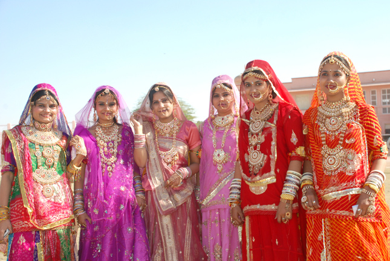
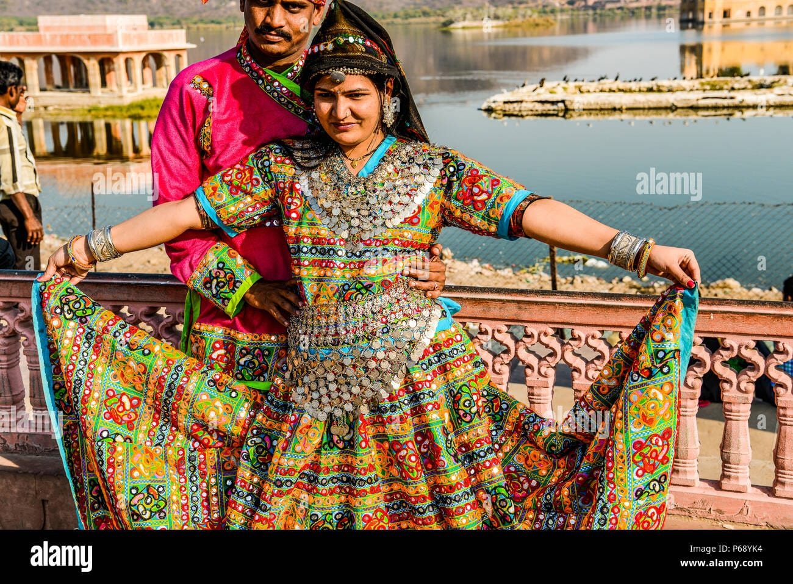
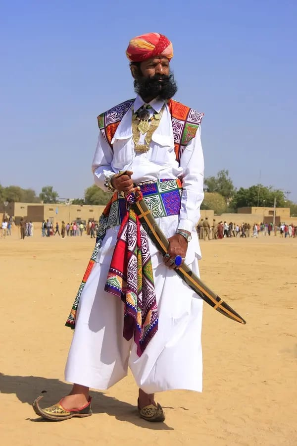
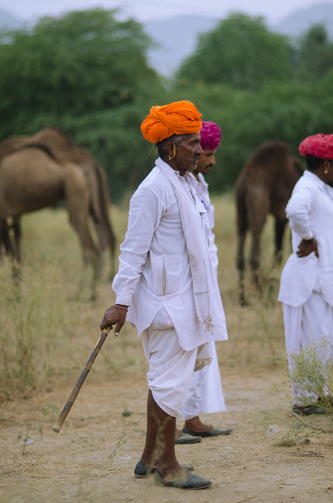
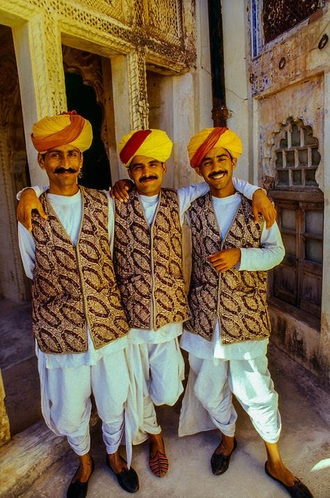

The traditional dress of Rajasthani women, known as the Rajputi Poshak, consists of a ghaghra (a long, flared skirt), a fitted blouse called a choli (sometimes also called a kanchli), and an odhni or chunari (a long, ornate veil). This ensemble is a cultural symbol of Rajasthan, featuring vibrant colors and intricate details like mirror work, beadwork, and embroidery.
Some of the traditional textiles of Rajasthan used in the block printing process are Bandhej, Sanganeri and Lehariya.


Rajasthani men traditionally wear a variety of clothing, with the most prominent being the angrakha, dhoti, and pagri (turban). The angrakha, a long coat, is often paired with a dhoti, a long piece of cloth wrapped around the waist and legs
Dhoti and angarkha for men, accompanied by comfortable Jootis or Mojris for both of them.


